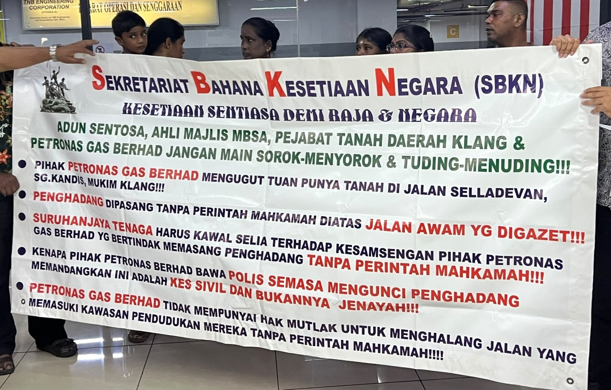

RM34,890.75 PREMIUM SUDAH DIBAYAR, RM439,819.01 TUNTUTAN DITOLAK — DATUK DR. KALAIVANAR PERSOAL NASIB SEORANG BALU
Bila perlindungan diperlukan selepas kematian, persoalan mula timbul: siapa yang akhirnya menanggung beban?
Apa yang sepatutnya menjadi perlindungan untuk sebuah keluarga selepas kehilangan ketua keluarga kini bertukar menjadi persoalan yang masih menuntut jawapan.
Seorang balu di Johor, Leshmi Achibabu, 43, didakwa berdepan bayaran pinjaman rumah sekitar RM1,850 sebulan selepas tuntutan perlindungan Mortgage Level Term Assurance (MLTA) berjumlah RM439,819.01 didakwa ditolak.
Perkara itu mendapat perhatian Datuk Dr. Kalaivanar, Pengerusi Sekretariat Bahana Kesetiaan Negara (SBKN). SBKN membawa persoalan keluarga berkenaan ke perhatian umum dan menuntut penjelasan terhadap perkara yang dipertikaikan.
SUAMI MENINGGAL, HUTANG RUMAH MASIH BERJALAN
Suami Leshmi, Rajesh Sinnasamy, meninggal dunia pada 18 Januari 2025, selepas dilaporkan baru sekitar sembilan bulan membayar ansuran pinjaman perumahan daripada tempoh keseluruhan 27 tahun.
Menurut maklumat yang dibangkitkan dalam sidang media, premium tunggal sebanyak RM34,890.75 telah dibayar bagi polisi MLTA yang memperuntukkan perlindungan sebanyak RM439,819.01 sekiranya berlaku kematian atau hilang upaya kekal.
Namun selepas kematian suami, Leshmi didakwa masih perlu menanggung bayaran pinjaman sekitar RM1,850 sebulan demi mengekalkan kediaman keluarganya.

SOALAN DATUK DR. KALAIVANAR: APA ASAS TUNTUTAN DITOLAK?
Menurut pihak pengadu, tuntutan tersebut didakwa ditolak atas alasan penyakit sedia ada. Namun, perkara itu menimbulkan persoalan mengenai asas penilaian dan bukti yang digunakan untuk membuat keputusan berkenaan.
LOD SUDAH DIHANTAR — JAWAPAN MASIH DINANTI
Pihak pengadu memaklumkan bahawa dokumen yang diminta telah diserahkan. Surat aduan serta Letter of Demand (LOD) melalui peguam juga dikatakan telah dihantar pada Julai dan Ogos lalu.
Menurut kenyataan Datuk Dr. Kalaivanar, SBKN turut mempersoalkan tindakan pihak berkaitan dalam memberikan maklum balas rasmi terhadap aduan tersebut.
48 JAM: SBKN MAHU PENYELESAIAN
Menurut laporan bertarikh 15 September 2026, SBKN memberikan tempoh 48 jam kepada syarikat insurans berkenaan untuk menyelesaikan tuntutan mangsa secara sah sebelum tindakan lanjut termasuk tindakan undang-undang dipertimbangkan.
Dalam masa sama, Datuk Dr. Kalaivanar turut mempersoalkan sejauh mana mekanisme pemantauan dan perlindungan pengguna dapat memastikan pihak yang terlibat mendapat penjelasan sewajarnya.
INI BUKAN SEKADAR SOAL ANGKA
Bagi sebuah keluarga, kehilangan suami dan pencari nafkah sudah cukup berat. Beban kewangan selepas itu boleh menjadikan keadaan lebih sukar.
Justeru, persoalan yang dibawa SBKN bukan semata-mata tentang siapa betul atau siapa salah. Yang lebih penting ialah jawapan yang jelas, dokumen yang boleh dirujuk dan proses semakan yang telus.
Jika tuntutan tidak memenuhi syarat polisi, keluarga berhak mengetahui sebabnya. Jika terdapat bukti penyakit sedia ada, asasnya perlu diterangkan. Jika masih terdapat ruang semakan, ruang tersebut sewajarnya diketahui oleh pihak pengadu.
PERSOALAN YANG MASIH MENUNGGU JAWAPAN
Apabila premium dibayar ketika perlindungan diperlukan, sejauh mana perlindungan itu benar-benar melindungi?
Nanis.Com akan terus memberikan ruang kepada pihak-pihak berkaitan untuk memberikan penjelasan dan maklum balas berhubung perkara ini.